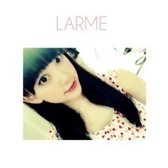

2014/1206Satかぼちゃ依存
こんばんは
堀未央奈です♪♪
今日はみなみとアサイーを
食べに行ってきました！
パンケーキも食べたいねって話してた
0.5秒後にお待たせしました
チョコクリームパンケーキですって
机に運ばれてきて2人で「え？」
ってなって頼んでないです...って
断りました(´･_･`)
2人とも同じ顔してました笑
久しぶりにゆっくり話せて良かった！
今度は温泉旅行行きたいな〜
最近の趣味は、
映画鑑賞と旅です！
映画は全般的によく観ます
最近はほぼ毎日(｀_´)ゞ
洋画邦画スプラッターホラー
恋愛コメディサスペンスＳＦ...
旅は小さい頃から家族の影響で
外国が好きでいつかは外国に
住みたいなと思っています。
その為にお休みがあれば色んな所へ
プチ旅行に行くの！
最近は国内ならジブリ博物館
海外ならスイスに行きたいなぁ♡
あといつか私が家族を温泉旅行に
連れていくのも夢です
部屋着はジェラートピケ♡
今日も新しく買いました！

携帯のフォルダを整理していたら
前LARMEに出た時の
写真が出てきました♫
楽しい撮影だったなぁ〜
最近急に寒くなりましたね>_<
皆さんお身体は大丈夫ですか？
岐阜は雪降っとるんかなぁ？
私は毎日マフラーが手放せません！
ぐるぐる巻きにして顔をうずめると
あったかいし落ち着くから好き♪♪
純奈♡
【今日の加工さん】
毎回画像を可愛く加工して
その写真について色々
話せたらいいなぁと思います。
ミニツリー✡
しかも去年のクリスマスライブで
欲しいって言ってたホワイトツリー
なんです！
お部屋のベッドの隣の棚に
飾りました(^-^)/
皆さんはクリスマスの
飾り付けとかしますか？
お母さんと雑貨屋さんを巡っていて
可愛い赤と白のクリスマスの
刺繍されたランチョンマットを
見つけたのでこれ欲しいって
言ったらご飯食べる時は敷かないよ！
汚れたら嫌でしょ！ってお母さんが
言い出して(´･_･`)笑
ランチョンマットの意味無いやん
って言ったら確かにって言いながら
笑ってました笑
コメント返し
11/29「かるぱっちょっ」
◎No.2 (メロン･ω･パン⊿)さん
次はクリスマスライブ！
14日の夜に行くけん(^-^)/
未央奈とみなみおなのうちわ
持っていく〜。未央奈の
頑張ってる姿ちゃんと
見るねヽ(*＾ω＾*)ﾉ
私事ながら風邪引いた疑惑。。。
未央奈も気をつけてね（ ; ; ）
あ、あと。
未央奈いつもブログ
長くなっちゃった。。。って
言ってるけど、私はブログが
長いほうが好きだよ♡
未央奈のブログ内容が
濃いし好き( ´͈ ᗨ `͈ )◞♡
忙しいなかブログ更新ありがとーね♡
ゆっくり休んでねヽ(*＾ω＾*)ﾉ
おやすみおな(ヽ´ω`)
○嬉しいヽ(*・ω・*)ﾉ
絶対見つける！
よし、ライブ頑張ります♪
メロンパンも身体気をつけて！
こちらこそいつも755やブログに
コメントありがとう(｡･ω･｡)
◎No.9 ナイキ君
この前の握手会はありがとう！
本当に楽しかった＼(^o^)／
久々に未央奈に会えたのも
嬉しかったし、やっぱり
元気になれた！！
未央奈が笑顔で
迎えてくれて良かった〜♪
次はグーチョキパン屋の
ノリに付き合ってよ？笑
握手会だと次行けるのは
1月かな(･_･;
また楽しもう^_−☆
今日も1日おつかれっちヾ(＠⌒ー⌒＠)ノ
○私も楽しかった〜(*^_^*)
1月も待っとるね♪♪
お疲れっち！
◎No.29 貴都さん
お疲れー
いっつも可愛すぎ！
○お疲れ様です♪♪
いやいや...
◎No.290 タカヒーロー
なんか久しぶりだな〜(=ﾟωﾟ)ﾉ
長文&写真たっぷりな
ブログありがとう！
読むの楽しい（≧∇≦）
リュック忘れたの面白い（笑）
でも、俺も学校でリュック背負わずに
帰ろうとしたことある(´･Д･)」
うわぐつを履き替えずにチャリに
乗って帰ろうとしたこともある(´･Д･)」
ここ最近はテレビに乃木坂が
いっぱい出てて嬉しいです！
でも、だんだん年末が
近づいてるんだなーって
気持ちにもなる（笑）
ほんと1年ってあっというまだね！
あっ、ウインクちゃんと見ましたよ！
○こちらこそいつも
読んでくれてありがとう(｡･ω･｡)
忘れちゃいますよね...笑
仲間だ〜みおなかま！
もう年末だもん！早い！
ウインク難しかったです...>_<...
以上
みんな自由。塩アイス
純奈は塩と砂糖を使い分ける小悪魔
日奈子はいじるのが好きなコショウ
私はスルーされても粘るシロップ
（´-`）.｡oO（
NOGIBINGO!3で
乃木の塚歌劇団の男装を
色んなメンバーがしていた時に
みんながちはるさんを見て
かっこいいかっこいいと言っていて
私はその間に、しれ〜っと
ちはるさんに抱きつきにいったら
能條さんに茶々をいれられました！
そんなちはるさんとは朝会ったら
手をあげて、よっ(・ω・)ノ
ってやるの♡笑
あとお弁当いくつ食べたか
報告し合う！
マトリョーシカ風
いつかの私服
昨日の靴はXmas風☆彡
先日StreetJackさんの撮影を
メンバーとしてきました！
その時に本誌を見させていただいて、
私の理想の服装ばかりでした！
リュック、スニーカー、帽子とかを
上手く着こなせる人って男女問わず
素敵だと思います！
乃木坂ファンの皆さんって
お洒落な方が凄く多いなぁって
思っていてその事を編集部の方と
話していました(｡･ω･｡)笑
発売日はまたお知らせします
告知
12/8 NOGIBINGO!3
12/17 乃木のの岐阜放送
12/18POKERFACE発売
(ガールズフォトブック)
12/21 乃木のの山梨放送、
ラジオ福島
12/22 Ray発売
12/26 Mステスーパーライブ
12/29 EYESCREAM発売
POKERFACEやEYESCREAM、
StreetJack、Rayなど
お洒落な洋服雑誌に最近
呼んでいただけて凄く嬉しいです...
12月の握手会でサンタさんと
パジャマを着ようと考え中。
サンタさんは1年に1度きりなので
皆さん来て下さったら嬉しいなぁ...♪
1/7発売の1stアルバム
【透明な色】
私はタイプCのジャケットに
写っています♪♪
今回はみなみ、私、飛鳥さんの
ユニット曲もいただいて
新しく収録されています！
ふわふわした爽やかな曲なので
是非沢山聴いて下さい♫
あ、明日の乃木どこでは
みなみとお出かけしました！
プライベートそのままです〜
皆さん絶対見てください！
ではでは
おやすみなみおな(ヽ´ω`)
2014/12/06 18:06
コメント(697)
アルバム買って握手しに行きたいです(｡-_-｡)
時に悩んだり寂しくなるみおちゃんのことを握手会にもライブにも行かない私なんかが支えになれているかどうかわからないけどせめて世界の片隅でささやかながら応援させていただきたいと思います。
それとみおちゃんのこと好きな人は決して少なくはないと思いますよ。
それでは おやすみおな。
それとみおちゃんのこと好きな人は決して少なくはないと思いますよ。
それでは おやすみおな。
未央かなァ～？
和歌山放送さん に お願いしたの・・・？
着いて来れれば 着いてきて貰えば 良いけどね！
普通に 来れば 良いよね！
アドベン パンダ 見に行くよね！
今年は ６匹産まれたみたいだよね！
夕食位は 一緒に 食べれるよね！
みなみと・・・？
暖かい 格好して 来てよね！

和歌山放送さん に お願いしたの・・・？
着いて来れれば 着いてきて貰えば 良いけどね！
普通に 来れば 良いよね！
アドベン パンダ 見に行くよね！
今年は ６匹産まれたみたいだよね！
夕食位は 一緒に 食べれるよね！
みなみと・・・？
暖かい 格好して 来てよね！
？？？未央奈ちゃんに質問です！！！
いつも未央奈ちゃんの写真かわいいと思って拝見させてもらってます！何のアプリを使っていますか？知りたいです！
いつも未央奈ちゃんの写真かわいいと思って拝見させてもらってます！何のアプリを使っていますか？知りたいです！
こんばんは！
クリスマスが近付いてきましたね。
旅行がお好きなんですね。僕はスイスには行った事がありません。
僕は十代の頃にカリフォルニア州のトーランスという街に二年半程住んでいました。
色々な国の出身の友達や先生方と交流が出来て貴重な経験が出来たと思っています。
日本人が多く住んでいる街で治安も良く学校にも沢山の日本人がいました。
日本料理の店も多く気候も穏やかなのでとても過ごしやすかったです。
ただ、日差しが強く年中乾燥してるので日焼けしやすいかもしれません(笑)
カリフォルニアも良いとても場所でしたが僕はカナダかスウェーデンに住んでみたいです。
しかしスウェーデン語はかなり難しいと聞きました…(笑)
堀さんはどこの国に住んでみたいですか？
クリスマスが近付いてきましたね。
旅行がお好きなんですね。僕はスイスには行った事がありません。
僕は十代の頃にカリフォルニア州のトーランスという街に二年半程住んでいました。
色々な国の出身の友達や先生方と交流が出来て貴重な経験が出来たと思っています。
日本人が多く住んでいる街で治安も良く学校にも沢山の日本人がいました。
日本料理の店も多く気候も穏やかなのでとても過ごしやすかったです。
ただ、日差しが強く年中乾燥してるので日焼けしやすいかもしれません(笑)
カリフォルニアも良いとても場所でしたが僕はカナダかスウェーデンに住んでみたいです。
しかしスウェーデン語はかなり難しいと聞きました…(笑)
堀さんはどこの国に住んでみたいですか？
大好きな大好きな堀ちゃん！
私のなりたい理想の女の子像です！
今更だけど神宮球場でたっくさんファンサ貰えて嬉しかったです( ´>_<` )♡♡ありがとうございました( ´>_<` )♡♡
まだ握手会は行けたことないので今度行きます！
堀ちゃんたまにみるきーに見えるときがありますね！
私のなりたい理想の女の子像です！
今更だけど神宮球場でたっくさんファンサ貰えて嬉しかったです( ´>_<` )♡♡ありがとうございました( ´>_<` )♡♡
まだ握手会は行けたことないので今度行きます！
堀ちゃんたまにみるきーに見えるときがありますね！
大好きな大好きな堀ちゃん！
私のなりたい理想の女の子像です！
今更だけど神宮球場でたっくさんファンサ貰えて嬉しかったです( ´>_<` )♡♡ありがとうございました( ´>_<` )♡♡
まだ握手会は行けたことないので今度行きます！
堀ちゃんたまにみるきーに見えるときがありますね！
私のなりたい理想の女の子像です！
今更だけど神宮球場でたっくさんファンサ貰えて嬉しかったです( ´>_<` )♡♡ありがとうございました( ´>_<` )♡♡
まだ握手会は行けたことないので今度行きます！
堀ちゃんたまにみるきーに見えるときがありますね！
Christmas が近づいてバタバタで….。
分身の術を使いたいけど、そんな技を持ってない。年末年始繁忙は私の仕事のピークを迎えて疲れてる。
忙しいのはうれしい悲鳴だけど、限度が欲しいのも体の欲求で…。
こんばんは 風の回廊です。
風の回廊です。
おいおい、ライブまで後、一週間。未央奈も気合いを入れる繁忙期だね！
有明コロシアムでの指定席はかなりの斜度があり、今までのライブ会場とは感覚が違う。武道館と似ているか？
そこでの公演だとパフォーマンスも上を見上げることを意識して欲しいな！
こちらも寒さ対策を万全にしないといけないね。なんせ、乃木坂の雨女がいるから天気の心配がある(笑)
後は真夏の全国ツアーのライブでの反省点があったはずだから(特に神宮での)改善して成功するように取り組んでもらいたいです。ライブに対する乃木坂メンバーの意識の変化が今年は異常に高くなってるからみんなで決めて統一するんだよ。
乃木坂46も今年一年、色んなことがありました。悲喜こもごもなことがあったでしょ！それを踏まえたうえでの集大成が今度のX'mas liveになる。期待します♪
さてと、未央奈からのブログやモバメで言われたとおり、のぎどこを見なければ…。
みなみと絡んでるみたいだから楽しみ♪
真夏さんに壁ドンしてね(笑)
こちらもサイリュウムやうちわ・タオルを用意しておかないと。
ではでは、ほりっぴー⊿
分身の術を使いたいけど、そんな技を持ってない。年末年始繁忙は私の仕事のピークを迎えて疲れてる。
忙しいのはうれしい悲鳴だけど、限度が欲しいのも体の欲求で…。
こんばんは
おいおい、ライブまで後、一週間。未央奈も気合いを入れる繁忙期だね！
有明コロシアムでの指定席はかなりの斜度があり、今までのライブ会場とは感覚が違う。武道館と似ているか？
そこでの公演だとパフォーマンスも上を見上げることを意識して欲しいな！
こちらも寒さ対策を万全にしないといけないね。なんせ、乃木坂の雨女がいるから天気の心配がある(笑)
後は真夏の全国ツアーのライブでの反省点があったはずだから(特に神宮での)改善して成功するように取り組んでもらいたいです。ライブに対する乃木坂メンバーの意識の変化が今年は異常に高くなってるからみんなで決めて統一するんだよ。
乃木坂46も今年一年、色んなことがありました。悲喜こもごもなことがあったでしょ！それを踏まえたうえでの集大成が今度のX'mas liveになる。期待します♪
さてと、未央奈からのブログやモバメで言われたとおり、のぎどこを見なければ…。
みなみと絡んでるみたいだから楽しみ♪
真夏さんに壁ドンしてね(笑)
こちらもサイリュウムやうちわ・タオルを用意しておかないと。
ではでは、ほりっぴー⊿
Christmas が近づいてバタバタで….。
分身の術を使いたいけど、そんな技を持ってない。年末年始繁忙は私の仕事のピークを迎えて疲れてる。
忙しいのはうれしい悲鳴だけど、限度が欲しいのも体の欲求で…。
こんばんは風の回廊です。
おいおい、ライブまで後、一週間。未央奈も気合いを入れる繁忙期だね！
有明コロシアムでの指定席はかなりの斜度があり、今までのライブ会場とは感覚が違う。武道館と似ているか？
そこでの公演だとパフォーマンスも上を見上げることを意識して欲しいな！
こちらも寒さ対策を万全にしないといけないね。なんせ、乃木坂の雨女がいるから天気の心配がある(笑)
後は真夏の全国ツアーのライブでの反省点があったはずだから(特に神宮での)改善して成功するように取り組んでもらいたいです。ライブに対する乃木坂メンバーの意識の変化が今年は異常に高くなってるからみんなで決めて統一するんだよ。
乃木坂46も今年一年、色んなことがありました。悲喜こもごもなことがあったでしょ！それを踏まえたうえでの集大成が今度のX'mas liveになる。期待します♪
さてと、未央奈からのブログやモバメで言われたとおり、のぎどこを見なければ…。
みなみと絡んでるみたいだから楽しみ♪
真夏さんに壁ドンしてね(笑)
こちらもサイリュウムやうちわ・タオルを用意しておかないと。
ではでは、ほりっぴー⊿
分身の術を使いたいけど、そんな技を持ってない。年末年始繁忙は私の仕事のピークを迎えて疲れてる。
忙しいのはうれしい悲鳴だけど、限度が欲しいのも体の欲求で…。
こんばんは
おいおい、ライブまで後、一週間。未央奈も気合いを入れる繁忙期だね！
有明コロシアムでの指定席はかなりの斜度があり、今までのライブ会場とは感覚が違う。武道館と似ているか？
そこでの公演だとパフォーマンスも上を見上げることを意識して欲しいな！
こちらも寒さ対策を万全にしないといけないね。なんせ、乃木坂の雨女がいるから天気の心配がある(笑)
後は真夏の全国ツアーのライブでの反省点があったはずだから(特に神宮での)改善して成功するように取り組んでもらいたいです。ライブに対する乃木坂メンバーの意識の変化が今年は異常に高くなってるからみんなで決めて統一するんだよ。
乃木坂46も今年一年、色んなことがありました。悲喜こもごもなことがあったでしょ！それを踏まえたうえでの集大成が今度のX'mas liveになる。期待します♪
さてと、未央奈からのブログやモバメで言われたとおり、のぎどこを見なければ…。
みなみと絡んでるみたいだから楽しみ♪
真夏さんに壁ドンしてね(笑)
こちらもサイリュウムやうちわ・タオルを用意しておかないと。
ではでは、ほりっぴー⊿
コメント2回目＼(^o^)／
温泉なら別府温泉オススメだよ！
あ、大分県ね！
私も海外に住みたい(^-^)
私はイギリスかな〜
昔から言ってるけどあの雰囲気が好き♡
なんかねイギリスのイートン・コレッジっていう学校があるんやけど、そこのPOPっていう優等生の人たちの制服が可愛いんよ♡
カラフルでねオシャレ！好きなベスト着れたりするんやって！
最近洋服が気になってきてね、それで卒論書こうと思ってるんよヽ(*＾ω＾*)ﾉ
あ、映画観てるんやね！
もう観たかもしれんけどメリーポピンズとかミュージカルオススメ！観てて一緒に歌っちゃう♡
なんか、13日からあと1センチの恋っていう映画が公開するんやけど気になってるんよ( ´͈ ᗨ `͈ )◞
よかったら観てみて♡
ジェラピケ私も買う予定やけどクリスマスの赤色のやつ可愛かったなぁ（´-`）.｡oO（♡
またLARME載ってほしい！あ、今月のRayもちゃんと買うよ！
マフラーやけどノッカンドゥっていうとこのマフラーが可愛いんよ♡
お店が東京にはあるみたい(^-^)
私もここのやつでめっちゃ欲しいやつがあるんよ！
加工写真可愛いね(o^^o)
今月チェキ買う予定♡
チェキ クラシックってやつ！
たくさん写真撮る！めっちゃ好きなんよ写真も！
クリスマスはもうツリー飾ってるよ！
ゴールド仕様のツリー(^-^)
私の身長より高いから上に飾りつけるの大変やった(°_°)
コメント返信ありがとうね♡
いつもいつも長くなって申し訳ない。。。
塩アイスの写真の2番目のやつ、好き*\(^o^)/*
ディズニーシーの塩アイスは食べたことあるんやろうか？
SJの撮影？気になる気になる。。。
たしかにファンの人オシャレな人多いね！
私もオシャレになりたい（´-`）.｡oO（
12月の握手会行きたいけどさすがに名古屋と京都は行かれん（ ; ; ）
1月18日が行ける握手会かな！
乃木どこ絶対観るよ＼(^o^)／
長くなってごめんね！
それじゃおやすみおな(ヽ´ω`)
温泉なら別府温泉オススメだよ！
あ、大分県ね！
私も海外に住みたい(^-^)
私はイギリスかな〜
昔から言ってるけどあの雰囲気が好き♡
なんかねイギリスのイートン・コレッジっていう学校があるんやけど、そこのPOPっていう優等生の人たちの制服が可愛いんよ♡
カラフルでねオシャレ！好きなベスト着れたりするんやって！
最近洋服が気になってきてね、それで卒論書こうと思ってるんよヽ(*＾ω＾*)ﾉ
あ、映画観てるんやね！
もう観たかもしれんけどメリーポピンズとかミュージカルオススメ！観てて一緒に歌っちゃう♡
なんか、13日からあと1センチの恋っていう映画が公開するんやけど気になってるんよ( ´͈ ᗨ `͈ )◞
よかったら観てみて♡
ジェラピケ私も買う予定やけどクリスマスの赤色のやつ可愛かったなぁ（´-`）.｡oO（♡
またLARME載ってほしい！あ、今月のRayもちゃんと買うよ！
マフラーやけどノッカンドゥっていうとこのマフラーが可愛いんよ♡
お店が東京にはあるみたい(^-^)
私もここのやつでめっちゃ欲しいやつがあるんよ！
加工写真可愛いね(o^^o)
今月チェキ買う予定♡
チェキ クラシックってやつ！
たくさん写真撮る！めっちゃ好きなんよ写真も！
クリスマスはもうツリー飾ってるよ！
ゴールド仕様のツリー(^-^)
私の身長より高いから上に飾りつけるの大変やった(°_°)
コメント返信ありがとうね♡
いつもいつも長くなって申し訳ない。。。
塩アイスの写真の2番目のやつ、好き*\(^o^)/*
ディズニーシーの塩アイスは食べたことあるんやろうか？
SJの撮影？気になる気になる。。。
たしかにファンの人オシャレな人多いね！
私もオシャレになりたい（´-`）.｡oO（
12月の握手会行きたいけどさすがに名古屋と京都は行かれん（ ; ; ）
1月18日が行ける握手会かな！
乃木どこ絶対観るよ＼(^o^)／
長くなってごめんね！
それじゃおやすみおな(ヽ´ω`)
☆モバメの返信☆
堀ちゃんの言葉胸に染みます。
どんなに心が強くても凹むときはありますよ。
そうゆう時は頼ってね!!
最近堀ちゃんのモバメ見てると心配で今日も怖い夢とか嫌な事なかったかなっていつも心配しています…
だから755でもモバメでぶちまけて下さい!!
今自分が出来る事はこうやってコメントして元気付けることしか出来ないからね…
こんな自分でも握手会・ライブとか全然行ってないけど堀ちゃんの支えになれてるか分からないけど今もこれからも応援するんでよろしくお願いしますm(__)m
乃木どこ楽しみにしてるよ～!!
では今日も1日お疲れ様です!!
明日も楽しく頑張りましょう♪
毎日ポジティブにファイトo(*⌒O⌒)ｂ
堀ちゃん大好き(*^^*)
堀ちゃんの言葉胸に染みます。
どんなに心が強くても凹むときはありますよ。
そうゆう時は頼ってね!!
最近堀ちゃんのモバメ見てると心配で今日も怖い夢とか嫌な事なかったかなっていつも心配しています…
だから755でもモバメでぶちまけて下さい!!
今自分が出来る事はこうやってコメントして元気付けることしか出来ないからね…
こんな自分でも握手会・ライブとか全然行ってないけど堀ちゃんの支えになれてるか分からないけど今もこれからも応援するんでよろしくお願いしますm(__)m
乃木どこ楽しみにしてるよ～!!
では今日も1日お疲れ様です!!
明日も楽しく頑張りましょう♪
毎日ポジティブにファイトo(*⌒O⌒)ｂ
堀ちゃん大好き(*^^*)
岐阜は昨日初雪でした♡
こんにちわ
頑張ってとしか言葉で言えないですが
その数少ないと言う人の一員になれるよう頑張ります
２月以降の握手会等参加して行きます
自分の環境が整うまで少々お待ちください
未央奈ちゃんを支える一員に成れるよう努力中ですので
未央奈ちゃんの笑顔だけで頑張れます
モバメ･755など有りますが年末に向け無理為さらずに元気な 未央奈ちゃんが１番見たいので
クリスマスライブ楽しみにしています
堀未央奈大好きです949382
頑張ってとしか言葉で言えないですが
その数少ないと言う人の一員になれるよう頑張ります
２月以降の握手会等参加して行きます
自分の環境が整うまで少々お待ちください
未央奈ちゃんを支える一員に成れるよう努力中ですので
未央奈ちゃんの笑顔だけで頑張れます
モバメ･755など有りますが年末に向け無理為さらずに元気な 未央奈ちゃんが１番見たいので
クリスマスライブ楽しみにしています
堀未央奈大好きです949382
みおなー
みなみおな最高〜！みなみおなのサイリウム持とうと思うと3本になるから、2本になるように2人で決めて欲しいなぁと思う今日この頃。
パンケーキ、お店からのサービスやったら良かったんになぁ。おれが店員ならするな、うん。
みなみとの2人旅企画したら、報告してな、見てるだけで癒されそう。
出た、このジェラートピケの写メぱるるに似てる。ボブみおながいつか見れるんかな。絶対似合うな。
有明は防寒対策完璧で行くつもり。風邪引いて楽しめないの最悪やしな。
塩アイスの例えはなるほど。
ほんで、みおなはスルーされても粘るシロップねんろ。どうりでシフト聞きまくるわけやわ。
みなみおなあしゅの曲、Rの法則でやりそうやな。てか、やって欲しいわ。
みなみおながいつかWセンターになる気がしてる。
そんな予感。
長くなってすまん。
ほなまた〜
みなみおな最高〜！みなみおなのサイリウム持とうと思うと3本になるから、2本になるように2人で決めて欲しいなぁと思う今日この頃。
パンケーキ、お店からのサービスやったら良かったんになぁ。おれが店員ならするな、うん。
みなみとの2人旅企画したら、報告してな、見てるだけで癒されそう。
出た、このジェラートピケの写メぱるるに似てる。ボブみおながいつか見れるんかな。絶対似合うな。
有明は防寒対策完璧で行くつもり。風邪引いて楽しめないの最悪やしな。
塩アイスの例えはなるほど。
ほんで、みおなはスルーされても粘るシロップねんろ。どうりでシフト聞きまくるわけやわ。
みなみおなあしゅの曲、Rの法則でやりそうやな。てか、やって欲しいわ。
みなみおながいつかWセンターになる気がしてる。
そんな予感。
長くなってすまん。
ほなまた〜
こんばんわー 未央奈(^O^)/
今日も1日お疲れ様でした！
コメント遅くなりました(^^;)
昨日の司会、未央奈が応援してくれたお蔭で上手く出来たよー^^ してくれたよね？！ ありがと^^
スランプ、壁にぶつかった時は自分を見失ってしまいそうになるよね…
でも未央奈には沢山のファンが付いてるし、僕もその中の一人として遠くからやけど、応援してるし見守り続けるから、心配する事なく自分の目標に向かって邁進すればいい！
『応援して下さるファンが居るから頑張れる』って、言葉にしてくれるから嬉しいし、そんな未央奈が大好きで可愛い(*^^*)
泣きたい時は、我慢しないでいっぱい泣けばいい。そのうち楽になる♪
どこかで聴いたフレーズ…
『心の薬』 乃木の中でも好きな曲♪
ブログのコメントはまたしまーす！
今日も1日お疲れ様でした！
コメント遅くなりました(^^;)
昨日の司会、未央奈が応援してくれたお蔭で上手く出来たよー^^ してくれたよね？！ ありがと^^
スランプ、壁にぶつかった時は自分を見失ってしまいそうになるよね…
でも未央奈には沢山のファンが付いてるし、僕もその中の一人として遠くからやけど、応援してるし見守り続けるから、心配する事なく自分の目標に向かって邁進すればいい！
『応援して下さるファンが居るから頑張れる』って、言葉にしてくれるから嬉しいし、そんな未央奈が大好きで可愛い(*^^*)
泣きたい時は、我慢しないでいっぱい泣けばいい。そのうち楽になる♪
どこかで聴いたフレーズ…
『心の薬』 乃木の中でも好きな曲♪
ブログのコメントはまたしまーす！
今日もお疲れ様(^o^)
みなみと仲いいね～(*^▽^*)
温泉旅行、行けると
いいね(≧∇≦)b
最近の趣味、映画鑑賞と
旅なんだね
俺も好きだよ(^o^)
映画は時間があれば、
色々見たいな(^_^)
旅は最近あまり行けて
ないから行きたい(*^^*)
国内、海外どちらも
いいよね(o´∀`)b
ミニツリー可愛いね(´▽`)ノ
家は置物で飾りつけ
してるよ(ゝω・)
アルバムの三人の曲
楽しみにしてるねヾ(o´∀｀o)ﾉ
乃木どこ見るよ(*´▽｀*)
じゃあ、またね(＾∇＾)
みなみと仲いいね～(*^▽^*)
温泉旅行、行けると
いいね(≧∇≦)b
最近の趣味、映画鑑賞と
旅なんだね
俺も好きだよ(^o^)
映画は時間があれば、
色々見たいな(^_^)
旅は最近あまり行けて
ないから行きたい(*^^*)
国内、海外どちらも
いいよね(o´∀`)b
ミニツリー可愛いね(´▽`)ノ
家は置物で飾りつけ
してるよ(ゝω・)
アルバムの三人の曲
楽しみにしてるねヾ(o´∀｀o)ﾉ
乃木どこ見るよ(*´▽｀*)
じゃあ、またね(＾∇＾)
未央奈ちゃん、こんばんは。
久しぶりのコメントなのに、何か唐突な発言の様な気もするけど、
未央奈ちゃんのことを、これからもずっと応援してるからね！
日々いろんな感情の波があるだろうけど、負けずに自分の夢を追いかけてね(^_^)v
では、今日の「乃木どこ」楽しみにしてるね。
あっ、Xmasライブも観に行くよ～。
久しぶりのコメントなのに、何か唐突な発言の様な気もするけど、
未央奈ちゃんのことを、これからもずっと応援してるからね！
日々いろんな感情の波があるだろうけど、負けずに自分の夢を追いかけてね(^_^)v
では、今日の「乃木どこ」楽しみにしてるね。
あっ、Xmasライブも観に行くよ～。
アサイーボール食べてみたいなぁ…
まだ食べた事ないっちゃん(*_*)
アサイージュースなら飲んだ事あるけど笑
あ、昨日ね、博多駅行ったっちゃけどね、めっちゃイルミネーションが綺麗だったんよ
しかも、北欧のちっちゃなお店がたくさん来てて、未央奈ちゃんが好きそうな感じだった!!
どうしても報告したかった笑
是非とも今度の旅行は福岡へ(*´-`)
まだ食べた事ないっちゃん(*_*)
アサイージュースなら飲んだ事あるけど笑
あ、昨日ね、博多駅行ったっちゃけどね、めっちゃイルミネーションが綺麗だったんよ
しかも、北欧のちっちゃなお店がたくさん来てて、未央奈ちゃんが好きそうな感じだった!!
どうしても報告したかった笑
是非とも今度の旅行は福岡へ(*´-`)
みっ、みおなあぁーー！！
と叫んでみた。
オシャレって、少しでもしようとする事が大事だと思う。
乃木どこが、最近の楽しみの一つです。
みおなシロップどんな味？笑
最近寒いから、風邪ひかないでなー
おやすみなみおな。
と叫んでみた。
オシャレって、少しでもしようとする事が大事だと思う。
乃木どこが、最近の楽しみの一つです。
みおなシロップどんな味？笑
最近寒いから、風邪ひかないでなー
おやすみなみおな。
乃木どこ見て今日も頑張るよ！みおなの笑顔が大好き。今日も未央奈にいいこといっぱいありますように！ おやすみおな！！
未央奈おつかれー！コメント遅れてごめんね…
乃木どこみたよ！みなみおなの旅を追いたくなった！笑
今度岐阜いくねー！
あと、クリスマスライブは13日と14日の夜にいくからね！また見つけてね！
ではおやすみおな
乃木どこみたよ！みなみおなの旅を追いたくなった！笑
今度岐阜いくねー！
あと、クリスマスライブは13日と14日の夜にいくからね！また見つけてね！
ではおやすみおな
乃木どこ見てるよー!
みなみおなかわいい！！！
みおなかわいい！！！
焼き芋餡食べたーい( ☆∀☆)
焼き肉も食べたーい( ☆∀☆)
岐阜行きたい！！！
乃木どこ見たよ。2人で旅してるのかわいかったー。
かなりありがとうございます！お休みなさい。頑張って下さいね！
今日の『乃木どこ』良かったです！
みなみちゃんとの休日にとても癒されたし、スタジオでの前髪の感じが今まででも最強に可愛かったです（*^_^*）
みなみちゃんとの休日にとても癒されたし、スタジオでの前髪の感じが今まででも最強に可愛かったです（*^_^*）
未央奈の755見てるけど、いつも嫌な夢見たら泣いちゃうのが純粋で良いなと思う
俺は夢の中で強くて悪い人と戦ってて負けそうな時とか自分が殺されるような時、「ああ、これは夢だな」って我に返って目が覚める
俺も幼稚園児だった頃鬼が夢に出て来て怖くて泣いたけどそれくらいしか夢で泣いた記憶が無い
まあ、起きるっていう最終手段使えると安心して夢の中で暴れられるんだけどね
ヤバくなったら起きて逃げられるから（笑）
なんかこんなこと書いてたら変な人だね
恥ずかしい(/ω＼*)
振り返ると自分が夢の中で殺されかけてること多過ぎる
俺は夢の中で強くて悪い人と戦ってて負けそうな時とか自分が殺されるような時、「ああ、これは夢だな」って我に返って目が覚める
俺も幼稚園児だった頃鬼が夢に出て来て怖くて泣いたけどそれくらいしか夢で泣いた記憶が無い
まあ、起きるっていう最終手段使えると安心して夢の中で暴れられるんだけどね
ヤバくなったら起きて逃げられるから（笑）
なんかこんなこと書いてたら変な人だね
恥ずかしい(/ω＼*)
振り返ると自分が夢の中で殺されかけてること多過ぎる
乃木どこ見たよ〜！
すごい、ほんとの休日みたいでみてるほうも楽しかった！
あとみなみおなでデートみたいのを見るのが初めてだったから想像してた以上に二人とも自然体だった！
もう完全に親友なんだね！（＾_＾）
飛騨牛食べてるときに話してた、二人の最初の印象とか、自然と仲良くなって今では未央奈が相談できるメンバーになったエピソードとかきいてたら二人の友情感じてなんか幸せな気分になったよー（＾_＾）
今日の乃木どこでもっと未央奈の事好きになったよ！！
またこの企画あるといいね、もっといろんな人にいつもの未央奈を知って貰えるから！笑
これからも応援してます！！
クリスマスライブ、覚えること大変だと思うけど頑張ってね、楽しみにしてる！！
今週テスト頑張りまーす！笑 おやすみ〜〜、
すごい、ほんとの休日みたいでみてるほうも楽しかった！
あとみなみおなでデートみたいのを見るのが初めてだったから想像してた以上に二人とも自然体だった！
もう完全に親友なんだね！（＾_＾）
飛騨牛食べてるときに話してた、二人の最初の印象とか、自然と仲良くなって今では未央奈が相談できるメンバーになったエピソードとかきいてたら二人の友情感じてなんか幸せな気分になったよー（＾_＾）
今日の乃木どこでもっと未央奈の事好きになったよ！！
またこの企画あるといいね、もっといろんな人にいつもの未央奈を知って貰えるから！笑
これからも応援してます！！
クリスマスライブ、覚えること大変だと思うけど頑張ってね、楽しみにしてる！！
今週テスト頑張りまーす！笑 おやすみ〜〜、
乃木どこみたよー！岐阜のあの落ち着いた感じいいね～♪今度旅行でいってみたくなりました(^ー^)みなみともすごく仲良いみたいでとてもほっこりしました。みなみおなでもっと乃木坂46を盛り上げて下さい☆それではお身体には気をつけてこれからもお仕事頑張ってください＼(^^)／
みおなちゃん、こんばんわっ。深夜のおるすばん。。です！「乃木坂って、どこ？」見たよー☆ みなみおな、可愛かった☆ 休日ののんびりとしたところ、二人ののんびりした感じが、良かったよ。岐阜は、綺麗なところだね☆ 水がきれいって聞いたことはあったけど。最後の飛騨牛がたまらんなぁ。笑顔から伝わるわ〜☆ 僕もいつか食べてみよ。岐阜は、名古屋に出張したときに、そこから遠征して、１回だけ行ったことがあるね。仕事だから、駅の周辺だけで、そんなに広くは回れなかったけど。みなみおな、人気急上昇中だね☆ またね！おやすみー☆
堀ちゃん可愛いよー
乃木どこ見ました！
もー、みなみおな可愛すぎて可愛すぎて食べちゃいたいっ！笑
それから、お洋服のセンスもめっちゃ好み！と思って詳細知りたいです\( *´•ω•`*)/
乃木どこ見ました！
もー、みなみおな可愛すぎて可愛すぎて食べちゃいたいっ！笑
それから、お洋服のセンスもめっちゃ好み！と思って詳細知りたいです\( *´•ω•`*)/
みおなおつかれさま～( ´ ω ` )ﾉ
もうマフラーもコートも出して、寒さ対策全開なフランシーです！先週風邪引いちゃったんだよね( x _ x )この先、冬を乗り切れるか心配。。。笑 みおなも風邪引かないように気を付けてね～；
さっきの乃木どこ見たよー！郡上八幡ってすごい良い所なんだね～知らなかった！
それに何より、みなみおなののんびりした雰囲気が出てて、見てるだけでも癒された笑 アサイーの時もああいう感じだったのかな？きっと普段も変わらないんだろうなって思った^^
ランチョンマット汚したくないっていうお母さんの気持ちはすごい分かる笑 でもおしゃれなの多いからつい買いたくなるしね^^;
ところでモバメの話だけど、おれも微力ながらみおなを応援したいと思ってる人間の一人だよー。気持ちを強く持てない時だってもちろんあるだろうから、そんな時は何か少し話してみて^^
ちょっとぐらいは役に立つかもしれないから！笑
元気出してね！がんばろ！ヾ(*･∀･｀)o
もうマフラーもコートも出して、寒さ対策全開なフランシーです！先週風邪引いちゃったんだよね( x _ x )この先、冬を乗り切れるか心配。。。笑 みおなも風邪引かないように気を付けてね～；
さっきの乃木どこ見たよー！郡上八幡ってすごい良い所なんだね～知らなかった！
それに何より、みなみおなののんびりした雰囲気が出てて、見てるだけでも癒された笑 アサイーの時もああいう感じだったのかな？きっと普段も変わらないんだろうなって思った^^
ランチョンマット汚したくないっていうお母さんの気持ちはすごい分かる笑 でもおしゃれなの多いからつい買いたくなるしね^^;
ところでモバメの話だけど、おれも微力ながらみおなを応援したいと思ってる人間の一人だよー。気持ちを強く持てない時だってもちろんあるだろうから、そんな時は何か少し話してみて^^
ちょっとぐらいは役に立つかもしれないから！笑
元気出してね！がんばろ！ヾ(*･∀･｀)o
乃木どこ見たよー。
食べ物全部めっちゃ美味しそうだった！
特に焼き芋餡！食べてみたいヽ(・・)ノ
なんか未央奈が食べることが大好きな理由が分かった気がする。笑
とにかく、岐阜に行ってみたくなった！
ホントに！
未央奈もまた岐阜を紹介したりできる機会があるといいね。
未央奈、郡上八幡の みなみおな の休日の旅、すっごく かわいかったよ。
未央奈の実家の近くには、こんなに きれいな山や清流があるんだね。
街並みも、和風で情緒があって、落ち着いてて いいところだね。
未央奈の地元だから、方言も出てたし、すっごくリラックスできてたね。
焼き芋飴、鮎の塩焼きと、胃はブラックホールだったね。
特に、飛騨牛ステーキは、とっても美味しそうに食べてたね。
食レポ番組出演、またやってみてよ。
食品サンプルは、リアルだったね。
バナナ日村さんは、面白かったよ。
泡の立つビールサンプル、つまみ付き は、いいチョイスだったね。
これからも、みなみおな で、お互い悩みを相談し合って、ずっと仲良くしていってね。
未央奈の実家の近くには、こんなに きれいな山や清流があるんだね。
街並みも、和風で情緒があって、落ち着いてて いいところだね。
未央奈の地元だから、方言も出てたし、すっごくリラックスできてたね。
焼き芋飴、鮎の塩焼きと、胃はブラックホールだったね。
特に、飛騨牛ステーキは、とっても美味しそうに食べてたね。
食レポ番組出演、またやってみてよ。
食品サンプルは、リアルだったね。
バナナ日村さんは、面白かったよ。
泡の立つビールサンプル、つまみ付き は、いいチョイスだったね。
これからも、みなみおな で、お互い悩みを相談し合って、ずっと仲良くしていってね。
待ってました！
乃木坂ってどこ？
こんばんは(ヽ´ω`)
感想……ゆるい(笑)
でも、このゆるさが
みなみおなのいいところ( ´∀`)/
髪型もおそろだったね♪
まさかの郡上八幡！Σ（￣□￣;）
懐かしい…たった３ヶ月前に
行った場所なのに。
さんぷる工房寄らなかったん
だよな～…行けばよかった(>_<)
「グループの中で相談できる人が
できてよかった。」
…っていうみなみちゃんの言葉(T_T)
こんなこと言ってもらえたら
めっちゃ嬉しいよね(#^.^#)
地元にみなみちゃん招待
できてよかったね！
僕もまた行きたくなったよ(^o^)
とりあえずデブが恋しい♥
以上！
ユニット曲もたのしみおな♪
乃木どこのみなみおな可愛すぎた〜♥️
お肉屋さんでのカメラ写り込んで２人でにこってするのは、スタジオのみんなと同じように声に出してかわいい〜！って言っちゃったよ( ´ ▽ ` )❤
何度も巻き戻しました！
みなみと素敵な関係になれてよかったね！
これからもみおな、応援します〜♥️
お肉屋さんでのカメラ写り込んで２人でにこってするのは、スタジオのみんなと同じように声に出してかわいい〜！って言っちゃったよ( ´ ▽ ` )❤
何度も巻き戻しました！
みなみと素敵な関係になれてよかったね！
これからもみおな、応援します〜♥️
こんばんわ 未央奈^^
今日２回目のお疲れ様でしたー！
今日はどんな日でした？ 充実してたかな？
温泉旅行か・・・
ちょっと前までは1年に1回は行ってたんやけど
暫くいってないなぁ。
ずっと前には、下呂温泉にも行ったよーー(^-^)
恵那峡とか飛騨の朝市とかにも行ったー。
外国に住みたいと思ってるんやー。
僕もスイスには憧れます。『アルプスの少女 ハイジ』
の影響かな？ それと永世中立国っていうのもいいかなぁ？
なんて。
僕もプチ旅行っていうか、ドライブっていうか
未央奈の育った岐阜に行きたいなー。
これからは雪が多そう？(イメージ) やから
春になったら絶対行く！！！
ほんま最近急に冬！！ってなったから暖かくして
体調には気をつけて下さいね。
僕のお身体は全く大丈夫です！
昔から『何とかは風邪ひかないって』言うやろ^^;
このツリーなんかな？前モバメで言ってたの。
デザインも可愛らしいし、ホワイトツリーってのがいい。
白は未央奈が好きな色やもんね。
未央奈が載ってる雑誌見るのも楽しみやな～。
流石に女性雑誌は見れないし買えないけど(>_<)
乃木坂のﾌｧﾝってお洒落な人が多いんや！
僕はお洒落やないし、、 個握会行くのちょっと恥ずかしい(>_<) でも行かないと未央奈に会えないし。。
未央奈サンタ、見てみたい。だねー、1年に1回やもんね。
ファーストアルバムも楽しみやなぁー。
タイプC、絶対買う！ ほんでいっぱい聴く♪♪
乃木どこは、Youtubeで見ます。
なんせ、うちの地域は電波が・・・(>_<)
クリスマスライブまで1週間やね。
ライブに向けて、リハとかいろいろ大変やと思うけど、
体調、怪我には充分気をつけて本番を迎えて下さい。
僕は行って一緒に盛り上がる事は出来ないけど、応援してるし
必ず成功するよ！
頑張れーー！未央奈ーー！(≧∀≦)
なんか纏まらない文章^^;
それではおやすみなさい。。
今回もブログの未央奈ぜぇーんぶ可愛い(*^^*)
今日２回目のお疲れ様でしたー！
今日はどんな日でした？ 充実してたかな？
温泉旅行か・・・
ちょっと前までは1年に1回は行ってたんやけど
暫くいってないなぁ。
ずっと前には、下呂温泉にも行ったよーー(^-^)
恵那峡とか飛騨の朝市とかにも行ったー。
外国に住みたいと思ってるんやー。
僕もスイスには憧れます。『アルプスの少女 ハイジ』
の影響かな？ それと永世中立国っていうのもいいかなぁ？
なんて。
僕もプチ旅行っていうか、ドライブっていうか
未央奈の育った岐阜に行きたいなー。
これからは雪が多そう？(イメージ) やから
春になったら絶対行く！！！
ほんま最近急に冬！！ってなったから暖かくして
体調には気をつけて下さいね。
僕のお身体は全く大丈夫です！
昔から『何とかは風邪ひかないって』言うやろ^^;
このツリーなんかな？前モバメで言ってたの。
デザインも可愛らしいし、ホワイトツリーってのがいい。
白は未央奈が好きな色やもんね。
未央奈が載ってる雑誌見るのも楽しみやな～。
流石に女性雑誌は見れないし買えないけど(>_<)
乃木坂のﾌｧﾝってお洒落な人が多いんや！
僕はお洒落やないし、、 個握会行くのちょっと恥ずかしい(>_<) でも行かないと未央奈に会えないし。。
未央奈サンタ、見てみたい。だねー、1年に1回やもんね。
ファーストアルバムも楽しみやなぁー。
タイプC、絶対買う！ ほんでいっぱい聴く♪♪
乃木どこは、Youtubeで見ます。
なんせ、うちの地域は電波が・・・(>_<)
クリスマスライブまで1週間やね。
ライブに向けて、リハとかいろいろ大変やと思うけど、
体調、怪我には充分気をつけて本番を迎えて下さい。
僕は行って一緒に盛り上がる事は出来ないけど、応援してるし
必ず成功するよ！
頑張れーー！未央奈ーー！(≧∀≦)
なんか纏まらない文章^^;
それではおやすみなさい。。
今回もブログの未央奈ぜぇーんぶ可愛い(*^^*)
お疲れさま。
ライブのリハーサルで疲れてませんか？寒いし、乾燥してるし、体調は大丈夫ですか？
体に気をつけてライブに向けて頑張って下さい。
乃木どこのロケ、いい感じでしたね。ブログなどのみなみおなのまんまでしたね。ＴＶショ～とは思えないくらいのゆったりしたＶＴＲでした。
あんなのんびりの旅、いいですねぇ。街の風景も素敵だったし、二人の雰囲気もいいフィット感でした。
飛騨牛…美味そうだったなぁ。
あったかくして休んで下さいね。
ライブのリハーサルで疲れてませんか？寒いし、乾燥してるし、体調は大丈夫ですか？
体に気をつけてライブに向けて頑張って下さい。
乃木どこのロケ、いい感じでしたね。ブログなどのみなみおなのまんまでしたね。ＴＶショ～とは思えないくらいのゆったりしたＶＴＲでした。
あんなのんびりの旅、いいですねぇ。街の風景も素敵だったし、二人の雰囲気もいいフィット感でした。
飛騨牛…美味そうだったなぁ。
あったかくして休んで下さいね。
a.i.ていう映画は子供の頃見てガン泣きした、おすすめ
みおなこんばんは！
乃木どこ緩い感じが良かったo(^o^)o
アルバムはみなみおな＆あしゅが
とても楽しみ(*´ω｀*)
今週はいよいよLIVEだ！
アンダラ、クリライ最終日(前･後)
参戦予定だから良かったら見つけてねw
それでは体調に気を付けて頑張って♪
モバメ
いろんな事が自分の周りで起きて
辛い事楽しい事あると思うけど
一度の人生楽しんだ者勝ち！
っと思えば楽に感じると思う！
何かあったらまた
(家族･信頼出来る人･ファン)頼ってね！
２回目のコメントー＼(^o^)／
のぎどこみたよー(*^^*)♪♪
みなみおな超可愛かった！
本当に二人仲良いんだね！
岐阜行ってみたいって思った！
やったー！みなみおな特集？めっちゃゆるゆるで、めっちゃかわいいのはなぜだ？ まぁ、年ごろの娘で地方の旅先の休日だったらそうなるか！
未央奈の地元が旅先だったから、かわいい方言も聞けて良かったよ(’-’*)♪
おはようございます？ってか、こんな時間ですみません。風の回廊です。
先週からの寒気で郡上八幡も雪でしょうね？昔からの日本の外観の街並みで、流れている川も水が綺麗で、風格があるけれど清廉な処ですね！休日にはもってこいな場所です。
興味は仲良しになったところの件と７thで未央奈がセンターになった時の話が…。
みなみは７・８thで選抜から外れていたので会う機会が無かったから９thで急接近かな？不安なことや悩み事を話せる間柄になっているから未央奈にとってありがたい存在ですね！
これからも仲良く過ごして下さい。
もう少ししたら寝ます。
風の回廊は夜行性なんですよ(悲)
ライブのリハはまだでしょうが、ボイトレやダンスなど練習に頑張ってね！
ツイン(髪型)のみなみおな
反則だぜ
未央奈の地元が旅先だったから、かわいい方言も聞けて良かったよ(’-’*)♪
おはようございます？ってか、こんな時間ですみません。風の回廊です。
先週からの寒気で郡上八幡も雪でしょうね？昔からの日本の外観の街並みで、流れている川も水が綺麗で、風格があるけれど清廉な処ですね！休日にはもってこいな場所です。
興味は仲良しになったところの件と７thで未央奈がセンターになった時の話が…。
みなみは７・８thで選抜から外れていたので会う機会が無かったから９thで急接近かな？不安なことや悩み事を話せる間柄になっているから未央奈にとってありがたい存在ですね！
これからも仲良く過ごして下さい。
もう少ししたら寝ます。
風の回廊は夜行性なんですよ(悲)
ライブのリハはまだでしょうが、ボイトレやダンスなど練習に頑張ってね！
ツイン(髪型)のみなみおな
反則だぜ
土曜日に寂しいけど男2人でUSJ行ってきたよ(-｡-;クリスマスツリーめっちゃでかくてキレイだったしショーのイルミネーションすっごくキレイだった！次行ける時は女の子と行きたいけど…。行く人がいないかな笑
堀さん、おはようございます♪
星野さんと「アサイー」という食べ物を
食べてきたのですね＾＾
星野さんと仲が良いみたいですが、
夏のフリー＆イージーのｐｖでも堀さんと星野さんが
ヘッドフォンを付けて一緒に
座ってたような気がします。
この後インターネットで「アサイー」とはどういう
食べ物なのか調べてみますね☆
星野さんと「アサイー」という食べ物を
食べてきたのですね＾＾
星野さんと仲が良いみたいですが、
夏のフリー＆イージーのｐｖでも堀さんと星野さんが
ヘッドフォンを付けて一緒に
座ってたような気がします。
この後インターネットで「アサイー」とはどういう
食べ物なのか調べてみますね☆
☆モバメの返信☆
昨日コメントしようとしたんだけどテスト勉強していてすっかり忘れてた…
堀ちゃんの言葉胸に染みます!!
どんなに心が強くても凹むときはありますよ。
凹んだ時には一人で抱え込まず回りの人に言ったり755やモバメで思いをぶちまけて下さい!!
僕が今出来るのはこうやってコメントすることしか出来ないから、堀ちゃんの支えになれてるか分からないけど今もこれからも応援するのでよろしくお願いします!!
乃木どこ見れてないんですよ…
録画したんで後日みます!!
では今日も1日楽しく頑張りましょう♪
毎日ポジティブにファイトo(*⌒O⌒)ｂ
昨日コメントしようとしたんだけどテスト勉強していてすっかり忘れてた…
堀ちゃんの言葉胸に染みます!!
どんなに心が強くても凹むときはありますよ。
凹んだ時には一人で抱え込まず回りの人に言ったり755やモバメで思いをぶちまけて下さい!!
僕が今出来るのはこうやってコメントすることしか出来ないから、堀ちゃんの支えになれてるか分からないけど今もこれからも応援するのでよろしくお願いします!!
乃木どこ見れてないんですよ…
録画したんで後日みます!!
では今日も1日楽しく頑張りましょう♪
毎日ポジティブにファイトo(*⌒O⌒)ｂ
未央奈ちゃん おはよう 
昨日の乃木どこ見たよ、みなみおな可愛いかったなぁ〜 二人共、ふわふわしてて、可愛い 可愛い
二人共、ふわふわしてて、可愛い 可愛い
昨日の乃木どこ見たよ、みなみおな可愛いかったなぁ〜
755にもコメントしたけど、堀ちゃん、みなみおな大好きだけど、単推ししても良いかな⁉️まだ先だけど、2月7日東京 個握の2部、堀ちゃん当たった❗️初めての握手会で楽しみ〜。今週の12/13ライブも初めて❗️サイリウムの色って❓うちわって買った方が良いのかな❓モバメの写メ、可愛いくて感謝‼️釣られる〜〜（≧∇≦）。12/7乃木どこ？も最高にゆるカワで良かった。岐阜も行ってみたくなっと
のぎどこみた(●´ー｀●)
みなみおなかわいすぎー
みなみおなかわいすぎー
未央奈へ☆
乃木どこのみなみおな見たよ(´▽`)ノ
２人が本当に仲良しな様子が伝わってきて、すごく癒された
こないだの握手会でも言ったけど、みなみおな推しだからね(＾∇＾)
それにしても岐阜はいいところだね
この素敵な環境が未央奈のようなすてきな子を育んでくれたんだね
郡上八幡に行ってみたいなあ(*´▽｀*)
クリスマスライブは土日の夜に行くから(^-^)
未央奈は精一杯楽しんでね
じゃあ、またね
乃木どこのみなみおな見たよ(´▽`)ノ
２人が本当に仲良しな様子が伝わってきて、すごく癒された
こないだの握手会でも言ったけど、みなみおな推しだからね(＾∇＾)
それにしても岐阜はいいところだね
この素敵な環境が未央奈のようなすてきな子を育んでくれたんだね
郡上八幡に行ってみたいなあ(*´▽｀*)
クリスマスライブは土日の夜に行くから(^-^)
未央奈は精一杯楽しんでね
じゃあ、またね
おばあちゃん家が郡上だからめちゃ親近感湧くVTRだった！w
あと俺は、郡上は夏が好きだ！！
みおな、可愛過ぎたわぁ( ^ω^ )
あと俺は、郡上は夏が好きだ！！
みおな、可愛過ぎたわぁ( ^ω^ )


映像の中で、特に輝いて魅力的
辛いことも悩みもたくさんあると思うけど
これからもいい作品を出し続けて欲しい